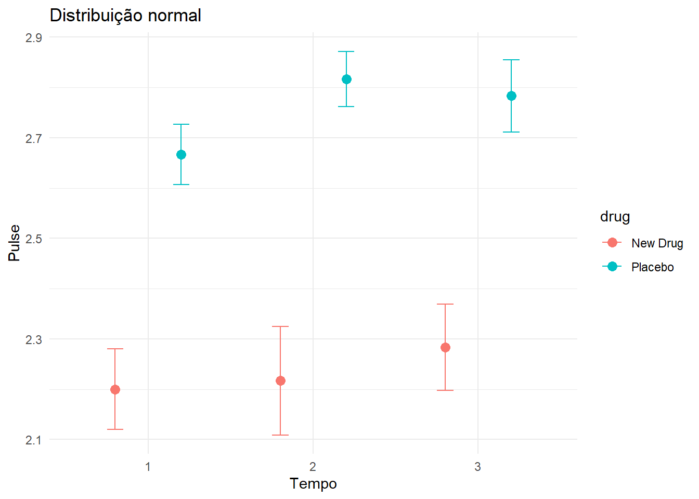
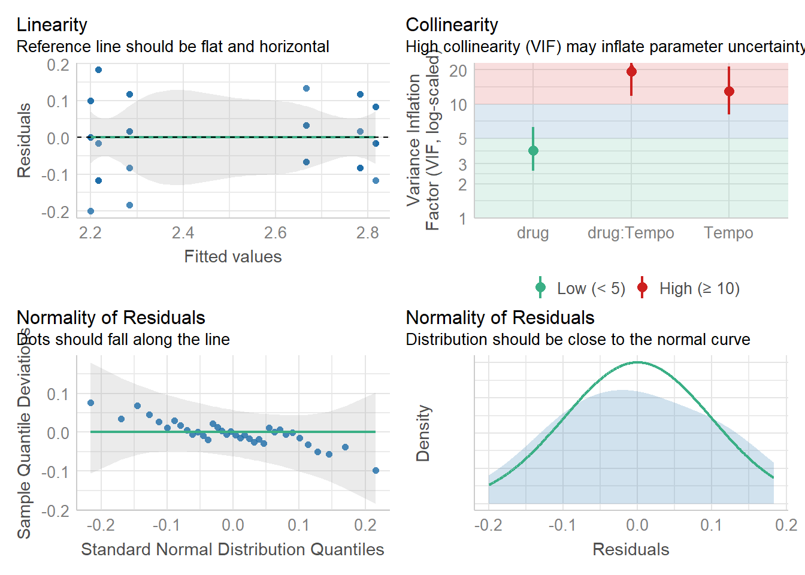
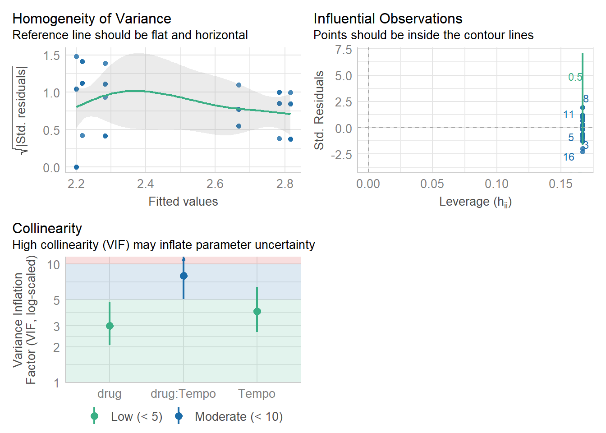

✓ Pacotes carregados!Lista 2: GEE Avançado
üì¶ Pacotes Necessários
üì• Prepara√ß√£o dos Dados
Download Necessário
Use o mesmo banco “New Drug” da Lista 1.
Carregamento e Transformação
# 1. Carregar dados originais
original_wide <- read.spss("bd_New drug_respiratory&pulse.sav",
to.data.frame = TRUE)
# 2. Renomear colunas
bd <- original_wide %>%
rename_with(~gsub("(resp|pulse)(\\d+)", "\\1_\\2", .), -drug) %>%
mutate(ID = row_number()) %>%
select(ID, everything())
# 3. Converter para formato long
bd_long <- pivot_longer(
bd,
cols = resp_1:pulse_3,
names_to = c(".value", "Tempo"),
names_pattern = "(.+)_(.+)"
)
# 4. Converter para fatores
bd_long$ID <- factor(bd_long$ID)
bd_long$Tempo <- factor(bd_long$Tempo)
# Visualizar estrutura
head(bd_long)# A tibble: 6 × 5
ID drug Tempo resp pulse
<fct> <fct> <fct> <dbl> <dbl>
1 1 New Drug 1 3.4 2.2
2 1 New Drug 2 3.3 2.1
3 1 New Drug 3 3.3 2.1
4 2 New Drug 1 3.4 2.2
5 2 New Drug 2 3.4 2.1
6 2 New Drug 3 3.3 2.2üéØ Parte A: Modelos GEE com Diferentes Distribui√ß√µes
Por que Testar Diferentes Distribuições?
A escolha da distribuição afeta: - Ajuste do modelo aos dados - Interpretação dos coeficientes - Precisão das predições - Validade das inferências
Testar múltiplas distribuições ajuda a identificar qual melhor representa seus dados.
Modelo 1: Distribuição Normal (Gaussian)
Ajuste do Modelo
modelo_gee_pulse_normal <- geeglm(
pulse ~ drug + Tempo + drug*Tempo,
data = bd_long,
id = ID,
family = gaussian,
corstr = "unstructured"
)
üìä Quando Usar Distribui√ß√£o Normal?
Adequada para: - Variáveis contínuas - Distribuição simétrica - Sem limite inferior ou superior rígido
Características: - Link: identidade (padrão) - Variância: constante - Suporte: \((-\infty, +\infty)\)
Resultados e Contrastes
summary(modelo_gee_pulse_normal)
Call:
geeglm(formula = pulse ~ drug + Tempo + drug * Tempo, family = gaussian,
data = bd_long, id = ID, corstr = "unstructured")
Coefficients:
Estimate Std.err Wald Pr(>|W|)
(Intercept) 2.20000 0.04082 2904.000 < 2e-16 ***
drugPlacebo 0.46667 0.05092 84.000 < 2e-16 ***
Tempo2 0.01667 0.03664 0.207 0.64921
Tempo3 0.08333 0.06838 1.485 0.22297
drugPlacebo:Tempo2 0.13333 0.04194 10.105 0.00148 **
drugPlacebo:Tempo3 0.03333 0.08767 0.145 0.70377
---
Signif. codes: 0 '***' 0.001 '**' 0.01 '*' 0.05 '.' 0.1 ' ' 1
Correlation structure = unstructured
Estimated Scale Parameters:
Estimate Std.err
(Intercept) 0.00963 0.001676
Link = identity
Estimated Correlation Parameters:
Estimate Std.err
alpha.1:2 0.7212 0.1690
alpha.1:3 -0.2885 0.2076
alpha.2:3 0.1154 0.2665
Number of clusters: 12 Maximum cluster size: 3 emmeans(modelo_gee_pulse_normal,
specs = ~drug*Tempo) drug Tempo emmean SE df lower.CL upper.CL
New Drug 1 2.20 0.0408 30 2.12 2.28
Placebo 1 2.67 0.0304 30 2.60 2.73
New Drug 2 2.22 0.0549 30 2.10 2.33
Placebo 2 2.82 0.0280 30 2.76 2.87
New Drug 3 2.28 0.0436 30 2.19 2.37
Placebo 3 2.78 0.0366 30 2.71 2.86
Covariance estimate used: vbeta
Confidence level used: 0.95 emmeans(modelo_gee_pulse_normal,
pairwise ~ drug*Tempo)$emmeans
drug Tempo emmean SE df lower.CL upper.CL
New Drug 1 2.20 0.0408 30 2.12 2.28
Placebo 1 2.67 0.0304 30 2.60 2.73
New Drug 2 2.22 0.0549 30 2.10 2.33
Placebo 2 2.82 0.0280 30 2.76 2.87
New Drug 3 2.28 0.0436 30 2.19 2.37
Placebo 3 2.78 0.0366 30 2.71 2.86
Covariance estimate used: vbeta
Confidence level used: 0.95
$contrasts
contrast estimate SE df t.ratio p.value
New Drug Tempo1 - Placebo Tempo1 -0.4667 0.0509 30 -9.165 <.0001
New Drug Tempo1 - New Drug Tempo2 -0.0167 0.0366 30 -0.455 0.9973
New Drug Tempo1 - Placebo Tempo2 -0.6167 0.0495 30 -12.449 <.0001
New Drug Tempo1 - New Drug Tempo3 -0.0833 0.0684 30 -1.219 0.8244
New Drug Tempo1 - Placebo Tempo3 -0.5833 0.0549 30 -10.634 <.0001
Placebo Tempo1 - New Drug Tempo2 0.4500 0.0627 30 7.173 <.0001
Placebo Tempo1 - Placebo Tempo2 -0.1500 0.0204 30 -7.348 <.0001
Placebo Tempo1 - New Drug Tempo3 0.3833 0.0531 30 7.213 <.0001
Placebo Tempo1 - Placebo Tempo3 -0.1167 0.0549 30 -2.127 0.3013
New Drug Tempo2 - Placebo Tempo2 -0.6000 0.0616 30 -9.738 <.0001
New Drug Tempo2 - New Drug Tempo3 -0.0667 0.0609 30 -1.095 0.8793
New Drug Tempo2 - Placebo Tempo3 -0.5667 0.0660 30 -8.590 <.0001
Placebo Tempo2 - New Drug Tempo3 0.5333 0.0518 30 10.292 <.0001
Placebo Tempo2 - Placebo Tempo3 0.0333 0.0509 30 0.655 0.9855
New Drug Tempo3 - Placebo Tempo3 -0.5000 0.0569 30 -8.783 <.0001
P value adjustment: tukey method for comparing a family of 6 estimates Diagnóstico do Modelo
check_model(modelo_gee_pulse_normal)
Visualização dos Resultados
# Calcular médias marginais
means_ci_normal <- emmeans(modelo_gee_pulse_normal,
specs = ~drug:Tempo)
# Criar gráfico elegante
ggplot(as.data.frame(means_ci_normal),
aes(x = Tempo, y = emmean, color = drug, group = drug)) +
geom_errorbar(
aes(ymin = lower.CL, ymax = upper.CL),
width = 0.2,
position = position_dodge(0.1)
) +
geom_point(
position = position_dodge(0.1),
size = 4
) +
geom_line(
position = position_dodge(0.1),
linewidth = 1
) +
labs(
title = "GEE com Distribuição Normal",
subtitle = "Médias marginais estimadas com IC 95%",
x = "Tempo",
y = "Pulso (bpm)",
color = "Tratamento"
) +
theme_minimal(base_size = 13) +
theme(
legend.position = "bottom",
plot.title = element_text(face = "bold", size = 15),
panel.grid.minor = element_blank()
) +
scale_color_brewer(palette = "Set1")
Modelo 2: Distribuição Gamma
Ajuste do Modelo
modelo_gee_pulse_gamma <- geeglm(
pulse ~ drug + Tempo + drug*Tempo,
data = bd_long,
id = ID,
family = Gamma(link = "identity"),
corstr = "unstructured"
)
üìä Quando Usar Distribui√ß√£o Gamma?
Adequada para: - Variáveis contínuas positivas - Distribuição assimétrica à direita - Variância proporcional à média
Características: - Link comum: log ou identity - Variância: aumenta com a média - Suporte: \((0, +\infty)\)
Exemplos: - Tempo de reação - Tempo de sobrevida - Concentrações biomarcadores
Resultados e Contrastes
summary(modelo_gee_pulse_gamma)
Call:
geeglm(formula = pulse ~ drug + Tempo + drug * Tempo, family = Gamma(link = "identity"),
data = bd_long, id = ID, corstr = "unstructured")
Coefficients:
Estimate Std.err Wald Pr(>|W|)
(Intercept) 2.2000 0.0408 2904.00 <2e-16 ***
drugPlacebo 0.4667 0.0509 84.00 <2e-16 ***
Tempo2 0.0167 0.0366 0.21 0.6492
Tempo3 0.0833 0.0684 1.49 0.2230
drugPlacebo:Tempo2 0.1333 0.0419 10.11 0.0015 **
drugPlacebo:Tempo3 0.0333 0.0877 0.14 0.7038
---
Signif. codes: 0 '***' 0.001 '**' 0.01 '*' 0.05 '.' 0.1 ' ' 1
Correlation structure = unstructured
Estimated Scale Parameters:
Estimate Std.err
(Intercept) 0.00172 0.000372
Link = identity
Estimated Correlation Parameters:
Estimate Std.err
alpha.1:2 0.745 0.178
alpha.1:3 -0.279 0.208
alpha.2:3 0.156 0.279
Number of clusters: 12 Maximum cluster size: 3 emmeans(modelo_gee_pulse_gamma,
specs = ~drug*Tempo) drug Tempo emmean SE df lower.CL upper.CL
New Drug 1 2.20 0.0408 30 2.12 2.28
Placebo 1 2.67 0.0304 30 2.60 2.73
New Drug 2 2.22 0.0549 30 2.10 2.33
Placebo 2 2.82 0.0281 30 2.76 2.87
New Drug 3 2.28 0.0436 30 2.19 2.37
Placebo 3 2.78 0.0366 30 2.71 2.86
Covariance estimate used: vbeta
Confidence level used: 0.95 emmeans(modelo_gee_pulse_gamma,
pairwise ~ drug*Tempo)$emmeans
drug Tempo emmean SE df lower.CL upper.CL
New Drug 1 2.20 0.0408 30 2.12 2.28
Placebo 1 2.67 0.0304 30 2.60 2.73
New Drug 2 2.22 0.0549 30 2.10 2.33
Placebo 2 2.82 0.0281 30 2.76 2.87
New Drug 3 2.28 0.0436 30 2.19 2.37
Placebo 3 2.78 0.0366 30 2.71 2.86
Covariance estimate used: vbeta
Confidence level used: 0.95
$contrasts
contrast estimate SE df t.ratio p.value
New Drug Tempo1 - Placebo Tempo1 -0.467 0.0509 30 -9.170 <.0001
New Drug Tempo1 - New Drug Tempo2 -0.017 0.0366 30 -0.450 0.9970
New Drug Tempo1 - Placebo Tempo2 -0.617 0.0495 30 -12.450 <.0001
New Drug Tempo1 - New Drug Tempo3 -0.083 0.0684 30 -1.220 0.8240
New Drug Tempo1 - Placebo Tempo3 -0.583 0.0549 30 -10.630 <.0001
Placebo Tempo1 - New Drug Tempo2 0.450 0.0627 30 7.170 <.0001
Placebo Tempo1 - Placebo Tempo2 -0.150 0.0204 30 -7.350 <.0001
Placebo Tempo1 - New Drug Tempo3 0.383 0.0531 30 7.210 <.0001
Placebo Tempo1 - Placebo Tempo3 -0.117 0.0549 30 -2.130 0.3010
New Drug Tempo2 - Placebo Tempo2 -0.600 0.0616 30 -9.740 <.0001
New Drug Tempo2 - New Drug Tempo3 -0.067 0.0609 30 -1.100 0.8790
New Drug Tempo2 - Placebo Tempo3 -0.567 0.0660 30 -8.590 <.0001
Placebo Tempo2 - New Drug Tempo3 0.533 0.0518 30 10.290 <.0001
Placebo Tempo2 - Placebo Tempo3 0.033 0.0509 30 0.650 0.9860
New Drug Tempo3 - Placebo Tempo3 -0.500 0.0569 30 -8.780 <.0001
P value adjustment: tukey method for comparing a family of 6 estimates Diagnóstico do Modelo
check_model(modelo_gee_pulse_gamma)Visualização dos Resultados
# Calcular médias marginais
means_ci_gamma <- emmeans(modelo_gee_pulse_gamma,
specs = ~drug:Tempo)
# Criar gráfico
ggplot(as.data.frame(means_ci_gamma),
aes(x = Tempo, y = emmean, color = drug, group = drug)) +
geom_errorbar(
aes(ymin = lower.CL, ymax = upper.CL),
width = 0.2,
position = position_dodge(0.1)
) +
geom_point(
position = position_dodge(0.1),
size = 4
) +
geom_line(
position = position_dodge(0.1),
linewidth = 1
) +
labs(
title = "GEE com Distribuição Gamma",
subtitle = "Médias marginais estimadas com IC 95%",
x = "Tempo",
y = "Pulso (bpm)",
color = "Tratamento"
) +
theme_minimal(base_size = 13) +
theme(
legend.position = "bottom",
plot.title = element_text(face = "bold", size = 15),
panel.grid.minor = element_blank()
) +
scale_color_brewer(palette = "Set1")
Modelo 3: Distribuição Tweedie
⚠️ Implementação Limitada
Atualmente, a função geeglm() não suporta nativamente a família Tweedie. Estamos usando glm() como alternativa, mas isso não captura a estrutura de correlação das medidas repetidas.
Recomendações: - Para análises definitivas, use SPSS ou SAS que implementam GEE-Tweedie - Considere glmmTMB::glmmTMB() como alternativa (modelo misto) - Aguarde atualizações do pacote geepack
Ajuste do Modelo (Limitado)
modelo_gee_pulse_tweedie <- glm(
pulse ~ drug + Tempo + drug*Tempo,
data = bd_long,
family = tweedie(var.power = 2, link.power = 0)
)
üìä Quando Usar Distribui√ß√£o Tweedie?
Adequada para: - Dados com excesso de zeros - Distribuição assimétrica - Variância aumenta com a média
Características: - Parâmetro var.power: - 0 = Normal - 1 = Poisson - 2 = Gamma - 1-2 = Distribuições compostas - Flexível para diferentes tipos de assimetria
Exemplos: - Custos médicos (muitos zeros) - Precipitação pluviométrica - Dados de contagem inflados de zeros
Resultados e Contrastes
summary(modelo_gee_pulse_tweedie)
Call:
glm(formula = pulse ~ drug + Tempo + drug * Tempo, family = tweedie(var.power = 2,
link.power = 0), data = bd_long)
Coefficients:
Estimate Std. Error t value Pr(>|t|)
(Intercept) 0.78846 0.01857 42.47 < 2e-16 ***
drugPlacebo 0.19237 0.02626 7.33 3.7e-08 ***
Tempo2 0.00755 0.02626 0.29 0.78
Tempo3 0.03718 0.02626 1.42 0.17
drugPlacebo:Tempo2 0.04718 0.03713 1.27 0.21
drugPlacebo:Tempo3 0.00564 0.03713 0.15 0.88
---
Signif. codes: 0 '***' 0.001 '**' 0.01 '*' 0.05 '.' 0.1 ' ' 1
(Dispersion parameter for Tweedie family taken to be 0.00207)
Null deviance: 0.473395 on 35 degrees of freedom
Residual deviance: 0.062212 on 30 degrees of freedom
AIC: NA
Number of Fisher Scoring iterations: 3emmeans(modelo_gee_pulse_tweedie,
specs = ~drug*Tempo) drug Tempo emmean SE df asymp.LCL asymp.UCL
New Drug 1 0.788 0.0186 Inf 0.752 0.825
Placebo 1 0.981 0.0186 Inf 0.944 1.017
New Drug 2 0.796 0.0186 Inf 0.760 0.832
Placebo 2 1.036 0.0186 Inf 0.999 1.072
New Drug 3 0.826 0.0186 Inf 0.789 0.862
Placebo 3 1.024 0.0186 Inf 0.987 1.060
Results are given on the mu^0 (not the response) scale.
Confidence level used: 0.95 emmeans(modelo_gee_pulse_tweedie,
pairwise ~ drug*Tempo)$emmeans
drug Tempo emmean SE df asymp.LCL asymp.UCL
New Drug 1 0.788 0.0186 Inf 0.752 0.825
Placebo 1 0.981 0.0186 Inf 0.944 1.017
New Drug 2 0.796 0.0186 Inf 0.760 0.832
Placebo 2 1.036 0.0186 Inf 0.999 1.072
New Drug 3 0.826 0.0186 Inf 0.789 0.862
Placebo 3 1.024 0.0186 Inf 0.987 1.060
Results are given on the mu^0 (not the response) scale.
Confidence level used: 0.95
$contrasts
contrast estimate SE df z.ratio p.value
New Drug Tempo1 - Placebo Tempo1 -0.1924 0.0263 Inf -7.330 <.0001
New Drug Tempo1 - New Drug Tempo2 -0.0075 0.0263 Inf -0.290 1.0000
New Drug Tempo1 - Placebo Tempo2 -0.2471 0.0263 Inf -9.410 <.0001
New Drug Tempo1 - New Drug Tempo3 -0.0372 0.0263 Inf -1.420 0.7170
New Drug Tempo1 - Placebo Tempo3 -0.2352 0.0263 Inf -8.960 <.0001
Placebo Tempo1 - New Drug Tempo2 0.1848 0.0263 Inf 7.040 <.0001
Placebo Tempo1 - Placebo Tempo2 -0.0547 0.0263 Inf -2.080 0.2950
Placebo Tempo1 - New Drug Tempo3 0.1552 0.0263 Inf 5.910 <.0001
Placebo Tempo1 - Placebo Tempo3 -0.0428 0.0263 Inf -1.630 0.5780
New Drug Tempo2 - Placebo Tempo2 -0.2395 0.0263 Inf -9.120 <.0001
New Drug Tempo2 - New Drug Tempo3 -0.0296 0.0263 Inf -1.130 0.8700
New Drug Tempo2 - Placebo Tempo3 -0.2276 0.0263 Inf -8.670 <.0001
Placebo Tempo2 - New Drug Tempo3 0.2099 0.0263 Inf 7.990 <.0001
Placebo Tempo2 - Placebo Tempo3 0.0119 0.0263 Inf 0.450 0.9980
New Drug Tempo3 - Placebo Tempo3 -0.1980 0.0263 Inf -7.540 <.0001
Note: contrasts are still on the mu^0 scale. Consider using
regrid() if you want contrasts of back-transformed estimates.
P value adjustment: tukey method for comparing a family of 6 estimates Diagnóstico do Modelo
check_model(modelo_gee_pulse_tweedie)
Visualização dos Resultados
# Calcular médias marginais
means_ci_tweedie <- emmeans(modelo_gee_pulse_tweedie,
specs = ~drug:Tempo)
# Criar gráfico
ggplot(as.data.frame(means_ci_tweedie),
aes(x = Tempo, y = emmean, color = drug, group = drug)) +
geom_errorbar(
aes(ymin = asymp.LCL, ymax = asymp.UCL),
width = 0.2,
position = position_dodge(0.1)
) +
geom_point(
position = position_dodge(0.1),
size = 4
) +
geom_line(
position = position_dodge(0.1),
linewidth = 1
) +
labs(
title = "GLM com Distribuição Tweedie",
subtitle = "Médias marginais estimadas com IC 95% (sem estrutura de correlação)",
x = "Tempo",
y = "Pulso (bpm)",
color = "Tratamento",
caption = "Nota: Modelo não captura correlação entre medidas repetidas"
) +
theme_minimal(base_size = 13) +
theme(
legend.position = "bottom",
plot.title = element_text(face = "bold", size = 15),
panel.grid.minor = element_blank(),
plot.caption = element_text(face = "italic", hjust = 0)
) +
scale_color_brewer(palette = "Set1")üéØ Parte B: Compara√ß√£o de Modelos com QIC
O que é QIC?
Quasi-likelihood Information Criterion é análogo ao AIC, mas para modelos GEE.
Interpretação: - Menor QIC = melhor modelo - Diferença > 2 indica melhoria substancial - Penaliza complexidade do modelo
Componentes: - QIC: Informação geral - QICu: Versão não ajustada - Quasi Lik: Quasi-verossimilhança
Cálculo do QIC
# Calcular QIC para modelos GEE
qic_normal <- QIC(modelo_gee_pulse_normal)
qic_gamma <- QIC(modelo_gee_pulse_gamma)
# Criar tabela comparativa
tabela_qic <- data.frame(
Modelo = c("Normal", "Gamma"),
QIC = c(qic_normal[1], qic_gamma[1]),
QICu = c(qic_normal[2], qic_gamma[2]),
QuasiLik = c(qic_normal[3], qic_gamma[3])
)
# Ordenar por QIC
tabela_qic <- tabela_qic[order(tabela_qic$QIC), ]
# Adicionar ranking
tabela_qic$Ranking <- 1:nrow(tabela_qic)
# Exibir resultado
knitr::kable(
tabela_qic,
digits = 2,
caption = "Comparação de Modelos via QIC (menor é melhor)"
)| Modelo | QIC | QICu | QuasiLik | Ranking |
|---|---|---|---|---|
| Normal | 12.3 | 12.3 | -0.17 | 1 |
| Gamma | 125.2 | 125.2 | -56.58 | 2 |
⚠️ Limitação do QIC
A função QIC() não funciona com modelos glm() ou lm(), apenas com geeglm().
Para o modelo Tweedie, você precisará: - Usar software específico (SPSS, SAS) - Aguardar implementação em R - Comparar apenas Normal vs Gamma por enquanto
Interpretação dos Resultados
Regra prática: - ΔqIC < 2: Modelos equivalentes - ΔqIC 2-10: Diferença moderada - ΔqIC > 10: Diferença substancial
# Calcular diferenças
delta_qic <- abs(diff(tabela_qic$QIC))
cat("Diferença QIC:", round(delta_qic, 2), "\n")Diferença QIC: 113 if (delta_qic < 2) {
cat("→ Modelos são equivalentes\n")
} else if (delta_qic < 10) {
cat("→ Diferença moderada - considere outros fatores\n")
} else {
cat("→ Diferença substancial - prefira modelo com menor QIC\n")
}→ Diferença substancial - prefira modelo com menor QICAlém do QIC, considere:
- Pressupostos teóricos
- Qual distribuição faz sentido para a variável?
- Pulse tem limite inferior (> 0)?
- Diagnósticos visuais
- Qual modelo tem melhores diagnósticos?
- Resíduos mais bem comportados?
- Interpretabilidade
- Coeficientes fazem sentido?
- Intervalos de confiança plausíveis?
- Validação cruzada
- Como o modelo prediz novos dados?
üìù Parte C: Sumarizando Resultados
Limitação do
report()
A função report() não funciona para modelos GEE (geeglm).
Funciona apenas para: glm, lm, lme, etc.
Aproveite para treinar escrita científica!
Exemplo de Relatório - Modelo Tweedie
report(modelo_gee_pulse_tweedie)We fitted a general linear model (Tweedie family with a mu^0 link) (estimated
using ML) to predict pulse with drug and Tempo (formula: pulse ~ drug + Tempo +
drug * Tempo). The model's explanatory power is substantial (Nagelkerke's R2 =
0.87). The model's intercept, corresponding to drug = New Drug and Tempo = 1,
is at 0.79 (95% CI [0.75, 0.83], p < .001). Within this model:
- The effect of drug [Placebo] is statistically significant and positive (beta
= 0.19, 95% CI [0.14, 0.24], p < .001; Std. beta = 0.19, 95% CI [0.14, 0.24])
- The effect of Tempo [2] is statistically non-significant and positive (beta =
7.55e-03, 95% CI [-0.04, 0.06], p = 0.774; Std. beta = 7.55e-03, 95% CI [-0.04,
0.06])
- The effect of Tempo [3] is statistically non-significant and positive (beta =
0.04, 95% CI [-0.01, 0.09], p = 0.157; Std. beta = 0.04, 95% CI [-0.01, 0.09])
- The effect of drug [Placebo] × Tempo [2] is statistically non-significant and
positive (beta = 0.05, 95% CI [-0.03, 0.12], p = 0.204; Std. beta = 0.05, 95%
CI [-0.03, 0.12])
- The effect of drug [Placebo] × Tempo [3] is statistically non-significant and
positive (beta = 5.64e-03, 95% CI [-0.07, 0.08], p = 0.879; Std. beta =
5.64e-03, 95% CI [-0.07, 0.08])
Standardized parameters were obtained by fitting the model on a standardized
version of the dataset. 95% Confidence Intervals (CIs) and p-values were
computed using a Wald z-distribution approximation.Template para Redação Manual
üìù Estrutura Sugerida para Resultados
Para GEE, estruture seus resultados assim:
Análise de Medidas Repetidas via GEE
Utilizamos Equações de Estimação Generalizadas (GEE) com estrutura de correlação não-estruturada para modelar a trajetória de pulso ao longo de três momentos de avaliação (Tempo 1, 2, 3), comparando grupo experimental (droga) e controle (placebo).
Comparação de Distribuições
Testamos três especificações de distribuição: - Gaussiana (Normal) - Gamma - Tweedie (var.power = 2)
A comparação via QIC indicou que [MODELO X] apresentou melhor ajuste (QIC = X.XX), seguido por [MODELO Y] (QIC = Y.YY, ΔQIC = Z.ZZ).
Resultados Principais
No modelo [ESCOLHIDO]:
Efeito de Grupo: - O grupo que recebeu droga apresentou [maior/menor] pulso comparado ao placebo (β = X.XX, EP = Y.YY, p = Z.ZZ)
Efeito de Tempo: - Observou-se [aumento/redução/estabilidade] no pulso ao longo do tempo (β_Tempo2 = X.XX, p = Y.YY; β_Tempo3 = A.AA, p = B.BB)
Interação Grupo × Tempo: - [Houve/Não houve] interação significativa, indicando que [INTERPRETAÇÃO]
Médias Estimadas
As médias marginais estimadas revelaram que: - No Tempo 1: Droga M = X.X (IC95% Y.Y-Z.Z), Placebo M = A.A (IC95% B.B-C.C) - No Tempo 2: [continuar…] - No Tempo 3: [continuar…]
Conclusão
[Resumo dos achados principais e implicações]
üéØ Desafio: Análise da Variável ‚ÄúResp‚Äù
Sua Vez!
Agora replique todas as análises para a variável “resp” (respiração):
Checklist: - [ ] Modelo GEE com distribuição Normal - [ ] Modelo GEE com distribuição Gamma - [ ] Modelo GLM com distribuição Tweedie - [ ] Diagnósticos de cada modelo - [ ] Visualizações com ggplot2 - [ ] Comparação via QIC - [ ] Interpretação dos resultados - [ ] Redação científica dos achados
üí° Dica Importante
Não faça apenas copy/paste!
- Digite os códigos para treinar sintaxe
- Renomeie variáveis apropriadamente:
modelo_gee_pulse_normal→modelo_gee_resp_normalmeans_ci_normal→means_ci_resp_normal
- Ajuste labels nos gráficos (Pulse → Resp)
- Compare seus resultados com a aula prática
- Reflita sobre diferenças entre as variáveis
üìö Material Complementar
Aula em Vídeo (SPSS)
Aprofundamento Teórico
üìñ Entendendo Distribui√ß√µes
Normal (Gaussian): - Clássica, simétrica, bem conhecida - Assume variância constante - Adequada para muitas variáveis contínuas
Gamma: - Assimétrica à direita - Variância aumenta com a média - Ideal para tempos, concentrações
Tweedie: - Família flexível entre Poisson e Gamma - var.power controla forma: - 0: Normal - 1: Poisson
- 2: Gamma - 1 < p < 2: Distribuições compostas - Útil para dados com zeros
Como escolher? 1. Examine distribuição dos dados (histogramas) 2. Considere natureza da variável (positiva? contínua?) 3. Teste múltiplas e compare QIC 4. Verifique pressupostos (diagnósticos)
Estruturas de Correlação GEE
üîó Tipos de
corstr
Independence: - Assume observações independentes - Mais simples, menos realista
Exchangeable: - Correlação constante entre momentos - Assume simetria composta
AR(1) - Autorregressiva: - Correlação diminui com distância temporal - Adequada para séries temporais
Unstructured: - Sem restrições, mais flexível - Estima todas as correlações - Requer mais dados
Como escolher? - Depende da estrutura temporal - unstructured é mais flexível mas menos eficiente - AR(1) para medições igualmente espaçadas - Teste e compare resultados
üîß Informa√ß√µes de Sessão
report(sessionInfo())Analyses were conducted using the R Statistical language (version 4.4.2; R Core
Team, 2024) on Windows 11 x64 (build 26100), using the packages lme4 (version
1.1.37; Bates D et al., 2015), Matrix (version 1.7.1; Bates D et al., 2024),
effectsize (version 1.0.1; Ben-Shachar MS et al., 2020), gee (version 4.13.29;
Carey VJ, 2024), statmod (version 1.5.1; Chen Y et al., 2025), fitdistrplus
(version 1.2.2; Delignette-Muller ML, Dutang C, 2015), tweedie (version 2.3.5;
Dunn PK, Smyth GK, 2005), flexplot (version 0.24.3; Fife, D, 2022), effects
(version 4.2.4; Fox J, Weisberg S, 2019), car (version 3.1.3; Fox J, Weisberg
S, 2019), carData (version 3.0.5; Fox J et al., 2022), mvtnorm (version 1.3.3;
Genz A, Bretz F, 2009), geepack (version 1.3.13; Halekoh U et al., 2006),
TH.data (version 1.1.3; Hothorn T, 2025), multcomp (version 1.4.28; Hothorn T
et al., 2008), rstatix (version 0.7.2; Kassambara A, 2023), emmeans (version
1.11.0; Lenth R, 2025), sjstats (version 0.19.1; Lüdecke D, 2025), parameters
(version 0.28.3; Lüdecke D et al., 2020), performance (version 0.15.2; Lüdecke
D et al., 2021), easystats (version 0.7.5; Lüdecke D et al., 2022), see
(version 0.12.0; Lüdecke D et al., 2021), insight (version 1.4.4; Lüdecke D et
al., 2019), bayestestR (version 0.17.0; Makowski D et al., 2019), modelbased
(version 0.13.1; Makowski D et al., 2025), report (version 0.6.3; Makowski D et
al., 2023), correlation (version 0.8.8; Makowski D et al., 2022), datawizard
(version 1.3.0; Patil I et al., 2022), nlme (version 3.1.166; Pinheiro J et
al., 2024), foreign (version 0.8.87; R Core Team, 2024), GGally (version 2.2.1;
Schloerke B et al., 2024), rempsyc (version 0.2.0; Thériault R, 2023), survival
(version 3.7.0; Therneau T, 2024), MASS (version 7.3.61; Venables WN, Ripley
BD, 2002), ggplot2 (version 4.0.1; Wickham H, 2016), dplyr (version 1.1.4;
Wickham H et al., 2023) and tidyr (version 1.3.1; Wickham H et al., 2024).
References
----------
- Bates D, Mächler M, Bolker B, Walker S (2015). "Fitting Linear Mixed-Effects
Models Using lme4." _Journal of Statistical Software_, *67*(1), 1-48.
doi:10.18637/jss.v067.i01 <https://doi.org/10.18637/jss.v067.i01>.
- Bates D, Maechler M, Jagan M (2024). _Matrix: Sparse and Dense Matrix Classes
and Methods_. R package version 1.7-1,
<https://CRAN.R-project.org/package=Matrix>.
- Ben-Shachar MS, Lüdecke D, Makowski D (2020). "effectsize: Estimation of
Effect Size Indices and Standardized Parameters." _Journal of Open Source
Software_, *5*(56), 2815. doi:10.21105/joss.02815
<https://doi.org/10.21105/joss.02815>, <https://doi.org/10.21105/joss.02815>.
- Carey VJ (2024). _gee: Generalized Estimation Equation Solver_. R package
version 4.13-29, <https://CRAN.R-project.org/package=gee>.
- Chen Y, Chen L, Lun ATL, Baldoni P, Smyth GK (2025). "edgeR v4: powerful
differential analysis of sequencing data with expanded functionality and
improved support for small counts and larger datasets." _Nucleic Acids
Research_, *53*(2), gkaf018. doi:10.1093/nar/gkaf018
<https://doi.org/10.1093/nar/gkaf018>. Dunn PK, Smyth GK (1996). "Randomized
quantile residuals." _J. Comput. Graph. Statist_, *5*, 236-244. Giner G, Smyth
GK (2016). "statmod: probability calculations for the inverse Gaussian
distribution." _R Journal_, *8*(1), 339-351. Hu Y, Smyth GK (2009). "ELDA:
extreme limiting dilution analysis for comparing depleted and enriched
populations in stem cell and other assays." _Journal of Immunological Methods_,
*347*(1), 70-78. Phipson B, Smyth GK (2010). "Permutation p-values should never
be zero: calculating exact p-values when permutations are randomly drawn."
_Statistical Applications in Genetics and Molecular Biology_, *9*(1), Article
39. Smyth GK (2005). "Numerical integration." _Encyclopedia of Biostatistics_,
3088-3095. Smyth GK (2005). "Optimization and nonlinear equations."
_Encyclopedia of Biostatistics_, 3088-3095. Smyth GK (2002). "An efficient
algorithm for REML in heteroscedastic regression." _Journal of Computational
and Graphical Statistics_, *11*, 836-847.
- Delignette-Muller ML, Dutang C (2015). "fitdistrplus: An R Package for
Fitting Distributions." _Journal of Statistical Software_, *64*(4), 1-34.
doi:10.18637/jss.v064.i04 <https://doi.org/10.18637/jss.v064.i04>.
- Dunn PK, Smyth GK (2005). "Series evaluation of Tweedie exponential
dispersion models." _Statistics and Computing_, *15*(4), 267-280. Dunn PK,
Smyth GK (2008). "Evaluation of Tweedie exponential dispersion models using
Fourier inversion." _Statistics and Computing_, *18*(1), 73-86. Dunn PK (2022).
_Tweedie: Evaluation of Tweedie Exponential Family Models_. R package version
2.3.5.
- Fife, A. D (2022). "Flexplot: Graphically-based data analysis."
_Psychological Methods_, *27*(4), -19. <doi.org/10.1037/met0000424>.
- Fox J, Weisberg S (2019). _An R Companion to Applied Regression_, 3rd
edition. Sage, Thousand Oaks CA.
<https://www.john-fox.ca/Companion/index.html>. Fox J, Weisberg S (2018).
"Visualizing Fit and Lack of Fit in Complex Regression Models with Predictor
Effect Plots and Partial Residuals." _Journal of Statistical Software_,
*87*(9), 1-27. doi:10.18637/jss.v087.i09
<https://doi.org/10.18637/jss.v087.i09>. Fox J (2003). "Effect Displays in R
for Generalised Linear Models." _Journal of Statistical Software_, *8*(15),
1-27. doi:10.18637/jss.v008.i15 <https://doi.org/10.18637/jss.v008.i15>. Fox J,
Hong J (2009). "Effect Displays in R for Multinomial and Proportional-Odds
Logit Models: Extensions to the effects Package." _Journal of Statistical
Software_, *32*(1), 1-24. doi:10.18637/jss.v032.i01
<https://doi.org/10.18637/jss.v032.i01>.
- Fox J, Weisberg S (2019). _An R Companion to Applied Regression_, Third
edition. Sage, Thousand Oaks CA. <https://www.john-fox.ca/Companion/>.
- Fox J, Weisberg S, Price B (2022). _carData: Companion to Applied Regression
Data Sets_. R package version 3.0-5,
<https://CRAN.R-project.org/package=carData>.
- Genz A, Bretz F (2009). _Computation of Multivariate Normal and t
Probabilities_, series Lecture Notes in Statistics. Springer-Verlag,
Heidelberg. ISBN 978-3-642-01688-2.
- Halekoh U, Højsgaard S, Yan J (2006). "The R Package geepack for Generalized
Estimating Equations." _Journal of Statistical Software_, *15/2*, 1-11. Yan J,
Fine JP (2004). "Estimating Equations for Association Structures." _Statistics
in Medicine_, *23*, 859-880. Yan J (2002). "geepack: Yet Another Package for
Generalized Estimating Equations." _R-News_, *2/3*, 12-14. Xu, Z., Fine, P. J,
Song, W., Yan, J. (2025). "On GEE for mean-variance-correlation models:
Variance estimation and model selection." _Statistics in Medicine_, *44*, 1-2.
- Hothorn T (2025). _TH.data: TH's Data Archive_. R package version 1.1-3,
<https://CRAN.R-project.org/package=TH.data>.
- Hothorn T, Bretz F, Westfall P (2008). "Simultaneous Inference in General
Parametric Models." _Biometrical Journal_, *50*(3), 346-363.
- Kassambara A (2023). _rstatix: Pipe-Friendly Framework for Basic Statistical
Tests_. R package version 0.7.2, <https://CRAN.R-project.org/package=rstatix>.
- Lenth R (2025). _emmeans: Estimated Marginal Means, aka Least-Squares Means_.
R package version 1.11.0, <https://CRAN.R-project.org/package=emmeans>.
- Lüdecke D (2025). _sjstats: Statistical Functions for Regression Models
(Version 0.19.1)_. doi:10.5281/zenodo.1284472
<https://doi.org/10.5281/zenodo.1284472>,
<https://CRAN.R-project.org/package=sjstats>.
- Lüdecke D, Ben-Shachar M, Patil I, Makowski D (2020). "Extracting, Computing
and Exploring the Parameters of Statistical Models using R." _Journal of Open
Source Software_, *5*(53), 2445. doi:10.21105/joss.02445
<https://doi.org/10.21105/joss.02445>.
- Lüdecke D, Ben-Shachar M, Patil I, Waggoner P, Makowski D (2021).
"performance: An R Package for Assessment, Comparison and Testing of
Statistical Models." _Journal of Open Source Software_, *6*(60), 3139.
doi:10.21105/joss.03139 <https://doi.org/10.21105/joss.03139>.
- Lüdecke D, Ben-Shachar M, Patil I, Wiernik B, Bacher E, Thériault R, Makowski
D (2022). "easystats: Framework for Easy Statistical Modeling, Visualization,
and Reporting." _CRAN_. doi:10.32614/CRAN.package.easystats
<https://doi.org/10.32614/CRAN.package.easystats>, R package,
<https://easystats.github.io/easystats/>.
- Lüdecke D, Patil I, Ben-Shachar M, Wiernik B, Waggoner P, Makowski D (2021).
"see: An R Package for Visualizing Statistical Models." _Journal of Open Source
Software_, *6*(64), 3393. doi:10.21105/joss.03393
<https://doi.org/10.21105/joss.03393>.
- Lüdecke D, Waggoner P, Makowski D (2019). "insight: A Unified Interface to
Access Information from Model Objects in R." _Journal of Open Source Software_,
*4*(38), 1412. doi:10.21105/joss.01412 <https://doi.org/10.21105/joss.01412>.
- Makowski D, Ben-Shachar M, Lüdecke D (2019). "bayestestR: Describing Effects
and their Uncertainty, Existence and Significance within the Bayesian
Framework." _Journal of Open Source Software_, *4*(40), 1541.
doi:10.21105/joss.01541 <https://doi.org/10.21105/joss.01541>,
<https://joss.theoj.org/papers/10.21105/joss.01541>.
- Makowski D, Ben-Shachar M, Wiernik B, Patil I, Thériault R, Lüdecke D (2025).
"modelbased: An R package to make the most out of your statistical models
through marginal means, marginal effects, and model predictions." _Journal of
Open Source Software_, *10*(109), 7969. doi:10.21105/joss.07969
<https://doi.org/10.21105/joss.07969>,
<https://joss.theoj.org/papers/10.21105/joss.07969>.
- Makowski D, Lüdecke D, Patil I, Thériault R, Ben-Shachar M, Wiernik B (2023).
"Automated Results Reporting as a Practical Tool to Improve Reproducibility and
Methodological Best Practices Adoption." _CRAN_.
doi:10.32614/CRAN.package.report
<https://doi.org/10.32614/CRAN.package.report>,
<https://easystats.github.io/report/>.
- Makowski D, Wiernik B, Patil I, Lüdecke D, Ben-Shachar M (2022).
"correlation: Methods for Correlation Analysis." Version 0.8.3,
<https://CRAN.R-project.org/package=correlation>. Makowski D, Ben-Shachar M,
Patil I, Lüdecke D (2020). "Methods and Algorithms for Correlation Analysis in
R." _Journal of Open Source Software_, *5*(51), 2306. doi:10.21105/joss.02306
<https://doi.org/10.21105/joss.02306>,
<https://joss.theoj.org/papers/10.21105/joss.02306>.
- Patil I, Makowski D, Ben-Shachar M, Wiernik B, Bacher E, Lüdecke D (2022).
"datawizard: An R Package for Easy Data Preparation and Statistical
Transformations." _Journal of Open Source Software_, *7*(78), 4684.
doi:10.21105/joss.04684 <https://doi.org/10.21105/joss.04684>.
- Pinheiro J, Bates D, R Core Team (2024). _nlme: Linear and Nonlinear Mixed
Effects Models_. R package version 3.1-166,
<https://CRAN.R-project.org/package=nlme>. Pinheiro JC, Bates DM (2000).
_Mixed-Effects Models in S and S-PLUS_. Springer, New York. doi:10.1007/b98882
<https://doi.org/10.1007/b98882>.
- R Core Team (2024). _foreign: Read Data Stored by 'Minitab', 'S', 'SAS',
'SPSS', 'Stata', 'Systat', 'Weka', 'dBase', ..._. R package version 0.8-87,
<https://CRAN.R-project.org/package=foreign>.
- R Core Team (2024). _R: A Language and Environment for Statistical
Computing_. R Foundation for Statistical Computing, Vienna, Austria.
<https://www.R-project.org/>.
- Schloerke B, Cook D, Larmarange J, Briatte F, Marbach M, Thoen E, Elberg A,
Crowley J (2024). _GGally: Extension to 'ggplot2'_. R package version 2.2.1,
<https://CRAN.R-project.org/package=GGally>.
- Thériault R (2023). "rempsyc: Convenience functions for psychology." _Journal
of Open Source Software_, *8*(87), 5466. doi:10.21105/joss.05466
<https://doi.org/10.21105/joss.05466>, <https://doi.org/10.21105/joss.05466>.
- Therneau T (2024). _A Package for Survival Analysis in R_. R package version
3.7-0, <https://CRAN.R-project.org/package=survival>. Terry M. Therneau,
Patricia M. Grambsch (2000). _Modeling Survival Data: Extending the Cox Model_.
Springer, New York. ISBN 0-387-98784-3.
- Venables WN, Ripley BD (2002). _Modern Applied Statistics with S_, Fourth
edition. Springer, New York. ISBN 0-387-95457-0,
<https://www.stats.ox.ac.uk/pub/MASS4/>.
- Wickham H (2016). _ggplot2: Elegant Graphics for Data Analysis_.
Springer-Verlag New York. ISBN 978-3-319-24277-4,
<https://ggplot2.tidyverse.org>.
- Wickham H, François R, Henry L, Müller K, Vaughan D (2023). _dplyr: A Grammar
of Data Manipulation_. R package version 1.1.4,
<https://CRAN.R-project.org/package=dplyr>.
- Wickham H, Vaughan D, Girlich M (2024). _tidyr: Tidy Messy Data_. R package
version 1.3.1, <https://CRAN.R-project.org/package=tidyr>.
üéì Resumo da Lista 2
Nesta lista você:
✅ Ajustou modelos GEE com três distribuições diferentes
✅ Aprendeu a comparar modelos via QIC
✅ Criou visualizações profissionais com ggplot2
✅ Interpretou diagnósticos de modelos complexos
✅ Praticou redação científica de resultados
Próximos passos: - Complete análises para variável “resp” - Compare resultados entre pulse e resp - Reflita sobre qual distribuição é mais adequada - Prepare-se para Lista 3: Modelos Mistos!